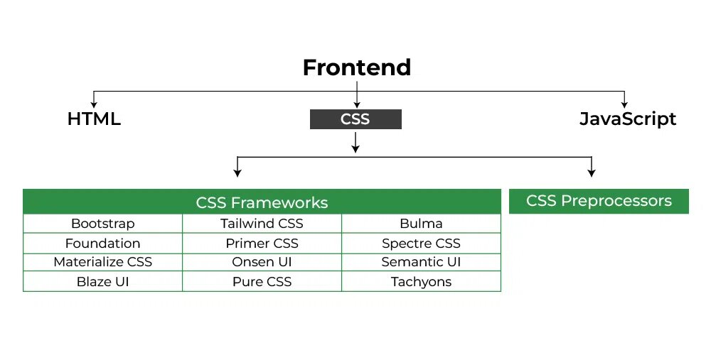

CSS Tutorial
Cascading Style Sheets (CSS) is a stylesheet language used to add styling on Markup languages such as HTML. CSS defines the presentation of HTML elements on a web page. It describes how HTML element will be visible in web page.
CSS Tutorial covers both basic and advanced concepts, including properties, selectors, functions, media queries, and more.
What is CSS?
CSS stands for Cascading Style Sheets. It is a stylesheet language used to style and enhance websites presentation. It controls the layout of web page i.e. how HTML elements will be display on a webpage. With CSS, you can adjust font sizes, colors, backgrounds, …, etc and manage the layout. It transforms a basic webpage into a visually appealing and user-friendly experience.
How to Add CSS on HTML?
There are three different ways to add CSS styles to HTML document, these are –
Inline CSS: Use the style attribute on HTML element to add styles to the web page. It is used for small projects.
Internal CSS: Place the CSS styles within a <style> tag inside the HTML file, usually inside the <head> section.
External CSS: Create a separate CSS file with a .css extension and link this file to your HTML file using the <link> tag.
CSS Tutorial
Introduction to Modern CSS
This section covers the basic understanding of CSS, its advantages and disadvantages.
Introduction to CSS
Advantages and Disadvantages of CSS
CSS Fundamentals
Understanding CSS basics is necessary whether you’re an experienced developer or just starting your web journey. Let’s explore some key CSS concepts.
CSS Syntax
CSS Ruleset
CSS Selectors
CSS Element Selector
CSS Attribute Selector
CSS Id Selector
Class Selector
Universal Selector
Pseudo-Class Selector
Pseudo-Element Selector
CSS Combinators
General Sibling selector (~)
Adjacent Sibling selector (+)
Child selector (>)
Descendant selector (space)
CSS Box model
CSS Layout
Styling Text
CSS Styling Techniques
CSS describes how HTML elements should be presented on the web page. It provides colors, positions to the HTML elements, etc., create animations, and amplify your web page.
CSS Fonts
CSS Colors
CSS Backgrounds
CSS Borders
CSS Grid
CSS Flexbox
CSS Images
CSS Lists
CSS Counters
CSS Columns
CSS Conditional Rules
CSS Logical Properties
CSS Math functions
CSS Responsive Design and Media Queries
While developing a site, it has to be mobile-friendly and responsive. Here, we discuss all the concepts that help you make your website responsive.
CSS Media queries
CSS Nesting style rules
CSS Positioning
Advanced CSS Topics
Let’s move further with the Advanced CSS. Learn advanced styling techniques and master your modern web design and development skills in 2024.
CSS Online Quizzes
To achieve a solid understanding of CSS, it’s essential to engage with CSS quizzes and MCQs. These CSS quizzes can enhance your ability to solve similar questions and improve your problem-solving skills.
Here are some quiz articles related to CSS 3:
Basic CSS Quiz
Intermediate CSS Quiz
Advanced CSS Quiz
CSS Practical Projects
The theoretical knowledge is not enought to understand CSS. So, it is required to work on some real life projects to learn CSS easily. Working on such HTML & CSS projects will test your CSS knowledge and you will get some hands-on experience.
Below are some HTML and CSS projects for better understanding.
Design GeeksforGeeks logo
Meet the Team Page Design
Tribute Page Design
Design a web page
Contact Us Page Design
Create Browsers Window
Design Email Newsletter
CSS Interview Preparation
Don’t miss our CSS Interview Questions and Answers before going for your interview.
CSS CheastSheet for Beginners (2024) – A Basic Guide to CSS
CSS Preprocessors
CSS Preprocessors introduce features like variables, nesting, and mixins to enhance the functionality, maintainability, and organization of stylesheets. Some popular preprocessors are:
CSS Preprocessor SASS
CSS Preprocessor LESS
CSS Preprocessors LESS vs SASS
CSS Frameworks
CSS frameworks are a collection of pre-written CSS files (and sometimes JavaScript components) that offer reusable code for common tasks such as buttons, grids, forms, and navigation menus.
These CSS frameworks provide a set of standardized, reusable components and a predefined structure, allowing developers to create responsive and aesthetically pleasing websites with reduced effort.

Other Resources
CSS Versions
CSS1: The foundation, released in 1996, introduced basic styling capabilities for fonts, colors, and margins.
CSS2: Expanded in 1998, adding positioning elements, pseudo-classes, and improved layout options.
CSS 2.1: Further refinements in 2004, including improvements to inheritance and box model properties.
CSS3: Introduced from 2001 onwards, CSS3 isn’t a single version but a collection of modules adding features like animations, media queries, and web fonts. It’s constantly evolving.
Recent developments focus on variables (custom properties), enhanced grid and flexbox layouts, subgrid, aspect-ratio property, and color manipulation functions.
Why learn CSS?
1. Enhance Visual Appeal: CSS allows you to style your web pages, making them visually appealing and engaging. Here’s why it matters:
User Experience (UX): Well-designed websites attract and retain users. CSS enables you to create beautiful layouts, choose fonts, and apply colors that resonate with your audience.
2. Responsive Design: In today’s mobile-first world, responsive design is crucial. CSS empowers you to:
Media Queries: Adapt your layout based on screen size (desktop, tablet, mobile).
Flexbox and Grid: Create flexible, adaptive designs that look great on any device.
3. SEO Benefits: CSS indirectly impacts your site’s SEO. Here’s how:
Page Load Speed: Well-organized CSS files load faster, improving user experience. Google considers page speed as a ranking factor.
Structured Content: Properly styled HTML (thanks to CSS) enhances readability for search engines and users.
Mobile Friendliness:Responsive CSS ensures your site performs well on mobile devices, positively affecting rankings.
4. Efficient Maintenance: CSS promotes clean code and separation of concerns:
Modularity: Separate CSS files allow easy updates without affecting other parts of your site.
Consistency: Apply styles consistently across your site using classes and IDs.
5. Career Opportunities: Learning CSS opens doors to various roles:
Front-End Developer: Mastering CSS is essential for front-end development.
Web Designer: CSS skills are fundamental for creating stunning web layouts.
Full-Stack Developer: Understanding CSS complements back-end skills.
Advanced CSS Features
As you conquer the basics, explore these powerful features to elevate your web design:
Media Queries: Tailor website layouts for different screen sizes, ensuring optimal viewing experiences across devices.
CSS Grid and Flexbox: Revolutionize website layouts with these frameworks for creating complex and responsive designs.
CSS Animations and Transitions: Add interactivity and visual flair to your webpages with smooth animations and transitions.
CSS – Frequently Asked Questions
What is the Full Form of CSS?
CSS stands for Cascading Style Sheets. It is a style sheet language used to describe the presentation and formatting of a document written in HTML or XML.
What are the types of CSS?
There are three types of CSS which are given below:
Inline CSS: Use the style attribute on HTML element to add styles to the web page. It is used for small projects.
Internal CSS: Place the CSS styles within a <style> tag inside the HTML file, usually inside the <head> section.
External CSS: Create a separate CSS file with a .css extension and link this file to your HTML file using the <link> tag.
How do I link an external CSS file to an HTML document?
Use the <link>element within the <head> section of your HTML document. Example: <link rel=”stylesheet” type=”text/css” href=”styles.css”>
What is the purpose of the ‘box model’ in CSS?
The box model is a fundamental concept in CSS that describes the layout of elements. It consists of content, padding, border, and margin, which collectively determine the size and spacing of an element.
How can I center an element horizontally and vertically in CSS?
To center horizontally, use margin: auto; on the element. For vertical centering, consider using Flexbox (display: flex; align-items: center; justify-content: center;) or Grid (display: grid; place-items: center;).
What is the difference between ‘margin’ and ‘padding’ in CSS?
Margin is the space outside an element, creating space between the element and its surrounding elements. Padding is the space inside an element, creating space between the element’s content and its border.
How do media queries contribute to responsive design in CSS?
Media queries allow developers to apply styles based on characteristics such as screen width, height, or device orientation. They are crucial for creating responsive designs that adapt to different devices and screen sizes.
Want to be a Software Developer or a Working Professional looking to enhance your Software Development Skills? Then, master the concepts of Full-Stack Development. Our Full Stack Development - React and Node.js Course will help you achieve this quickly. Learn everything from Front-End to Back-End Development with hands-on Projects and real-world examples. This course enables you to build scalable, efficient, dynamic web applications that stand out. Ready to become an expert in Full-Stack? Enroll Now and Start Creating the Future!